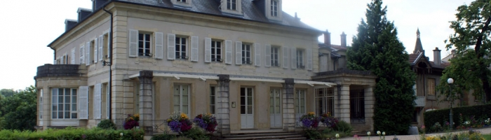
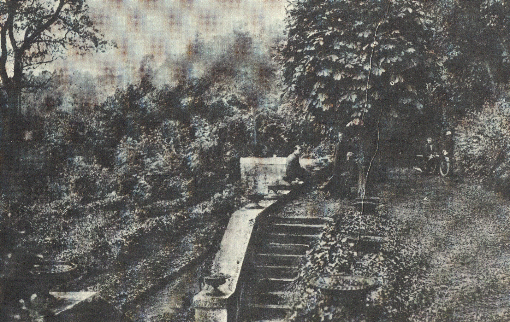
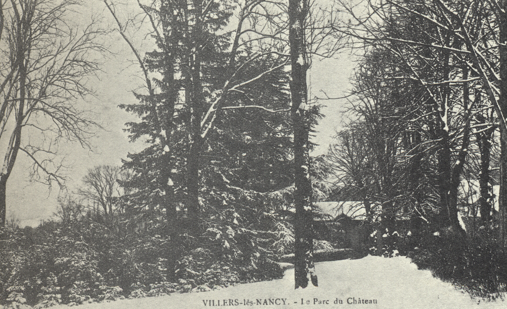

Le château Madame de Graffigny (ex GEC)
Rue Albert 1er | Entrées : rue Albert 1er, rue du Haut de la Taye, rue Charles Oudille | Salle d’exposition, salle des mariages, possibilité de location | Latitude : 48.67024958775726 - Longitude : 6.146060875424155
A l’origine du château, des petites maisons de village furent achetées et réunies par Dominique Constant, cuisinier de la duchesse de Lorraine et père de Raymond Constant, peintre des églises de Nancy.
La personnalité la plus célèbre ayant occupé le château est celle qui lui a donné son nom : Françoise D’Apponcourt, épouse de Graffigny. Elle a entretenu une correspondance suivie avec Voltaire et Diderot. Elle est l’auteure des Lettres d’une Péruvienne.
Vers 1712, François Huguet de Graffigny sera à l’origine du château et du parc dont le célèbre agronome Charles-Alexandre Mathieu de Dombasle s’est occupé.
La propriété a été vendue en juin 1928 au Groupement des étudiants catholiques dirigé par les Jésuites qui en sera propriétaire jusqu’en 1985. Le parc sera peu à peu ouvert au public, en particulier au début des années soixante, où il accueillera la Fête des Vendanges.
En juillet 1985, les Maisons Jacquard vendent la propriété à l’Etablissement Public Foncier de la Métropole Lorraine qui la revend en deux temps à la commune de Villers-lès-Nancy, le château et dépendances en 1986, le parc en 1987.
Depuis 1989, la commune restaure le château. Les sous-sols ont été aménagés en galerie inaugurée en juin 2006. La salle des mariages, installée dorénavant dans le château, a été inaugurée en mai 2015.
Depuis mai 2017, une convention est signée entre la Ville, la Fondation Lotharingie et la Fondation du Patrimoine en faveur d’une opération de mécénat pour la rénovation du premier étage du château.
Carte
Photos





Pour continuer la balade cliquez sur le bouton ci-dessous